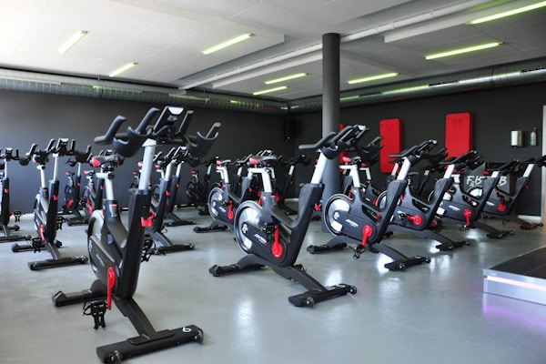
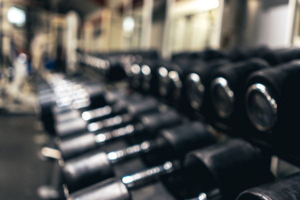
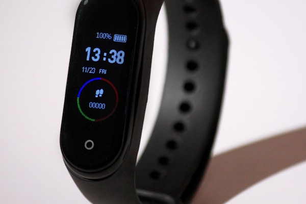

8 Apartment Workout Essentials Under $50 (2026)

You do not need a spare room or a pricey machine to get a solid workout at home. If you live in an apartment, the best fitness gear is compact, quiet, easy to store, and versatile enough for strength, cardio, and recovery. We rounded up eight Amazon-friendly workout essentials under $50 that work especially well in smaller spaces.
Why these picks work: each item is compact, beginner-friendly, and useful for multiple types of training — which is exactly what you want when space and budget are limited.
Best Apartment Workout Essentials
1. Resistance Bands Set

A resistance band set gives you the most flexibility for the least money. You can use bands for glute work, upper-body training, mobility, warmups, and even assisted pull-ups. They also disappear into a drawer when you are done.
Buy on Amazon2. Thick Non-Slip Yoga Mat

A good yoga mat protects your floors, dampens noise, and makes bodyweight workouts much more comfortable. Look for a thicker non-slip mat if you plan to do stretching, Pilates, or core work in a small apartment.
Buy on Amazon3. Adjustable Jump Rope

If you have access to a patio, garage, or nearby outdoor area, a jump rope is one of the cheapest ways to add real cardio to your routine. Adjustable ropes are easy to size correctly and store in seconds.
Buy on Amazon4. Adjustable Dumbbell or Hand Weight Set
For apartment training, compact dumbbells are a better pick than bulky machines. A light adjustable set or a pair of neoprene weights is enough for presses, rows, lunges, goblet squats, and dozens of other staple moves.
Buy on Amazon5. Ab Roller

An ab roller is tiny, inexpensive, and surprisingly effective for core strength. It works well for more advanced home exercisers who want a harder challenge than basic crunches and planks.
Buy on Amazon6. Doorway Pull-Up Bar

If your doorway setup allows it, a removable pull-up bar adds serious upper-body training without taking permanent space. Many models also work for hanging leg raises or band anchoring.
Buy on Amazon7. Fitness Tracker

A budget fitness tracker can help you stay consistent, especially if apartment workouts are replacing gym visits. Tracking steps, heart rate, workout minutes, and sleep makes it easier to stick with your plan.
Buy on Amazon8. Foam Roller or Recovery Roller
Recovery gear matters if you are training on a regular basis. A foam roller helps reduce post-workout tightness and takes up very little room compared with larger recovery tools.
Buy on AmazonIf you are building a small-space home gym from scratch, start with a mat, resistance bands, and one strength tool like dumbbells or a pull-up bar. That combination covers most workouts without crowding your apartment or your budget.
Affiliate Disclosure: This post contains affiliate links. We may earn a small commission when you make a purchase through these links, at no extra cost to you.